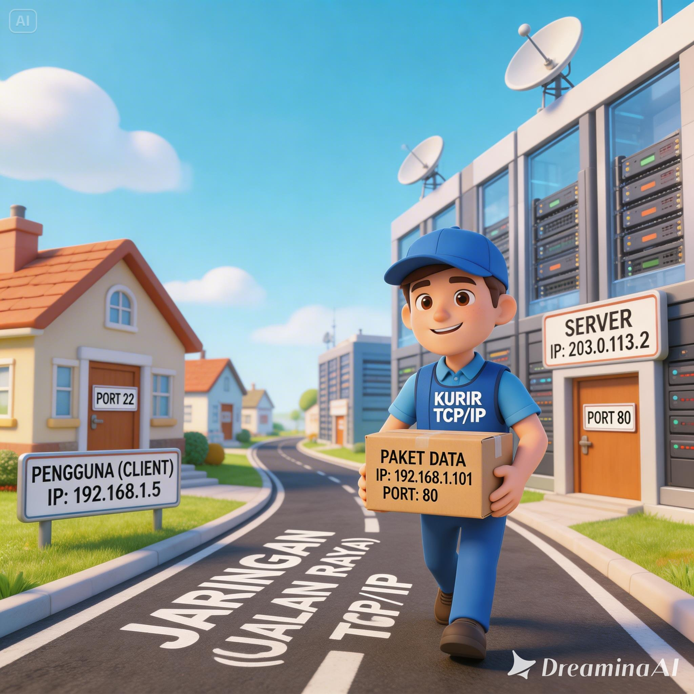
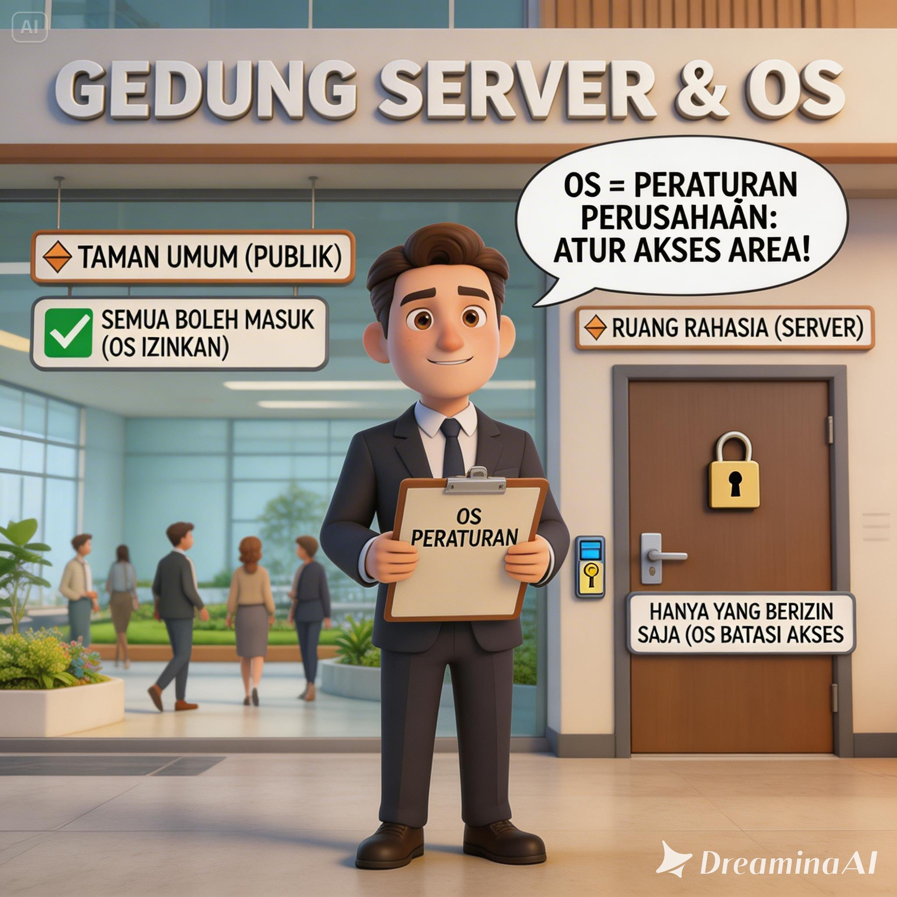
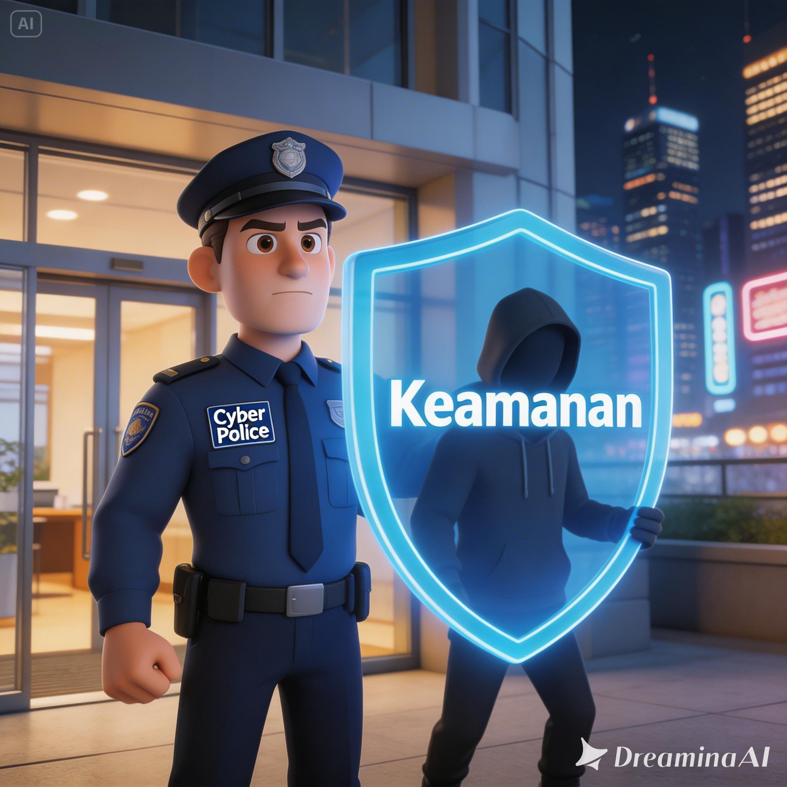
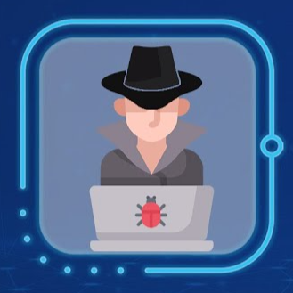
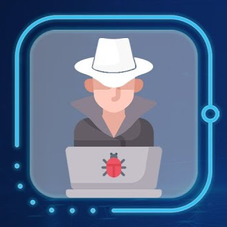

🌐 Pendahuluan: Analogi Kota Metropolitan
Mengapa kita sangat membutuhkan Keamanan Siber? Bayangkan dunia digital kita sebagai sebuah kota metropolitan yang sangat sibuk. Ada jalan raya yang merepresentasikan jaringan internet, ada rumah dan brankas bank yang merupakan server serta database, dan ada warga yang merupakan pengguna harian.
Jaringan (Jalan Raya)
Sistem pos dan kurir (TCP/IP) yang mengantarkan paket data dari satu alamat (IP Address) ke sebuah pintu yang spesifik (Port).

OS & Server (Bangunan)
Sistem Operasi layaknya Peraturan sebuah perusahaan yang mengatur siapa yang boleh masuk ke ruang rahasia dan taman umum.

Keamanan (Polisi)
Kriptografi dan penegakan hukum digital untuk memastikan gedung aman dari perampok (hacker jahat) di setiap lantai gedung.

Segitiga CIA (CIA Triad)
Ini adalah pilar utama dari seluruh ilmu keamanan siber. Ketiga elemen ini adalah harta karun yang secara konstan berusaha dipertahankan oleh sistem keamanan.
Confidentiality
Kerahasiaan
Data hanya boleh dibaca oleh orang yang berhak. Analogi: Hanya Anda dan teller bank yang tahu isi dan jumlah detail saldo tabungan Anda.
Integrity
Integritas
Data tidak boleh diubah oleh orang yang tidak berhak. Analogi: Jika Anda mentransfer Rp 10.000, peretas tidak boleh bisa mengubah nolnya menjadi Rp 1.000.000.
Availability
Ketersediaan
Sistem harus bisa diakses kapanpun dibutuhkan oleh user sah. Analogi: Saat Anda ingin tarik tunai, mesin ATM tidak boleh rusak atau sengaja diblokir.
Ethical Hacking & Lanskap Ancaman
Untuk mempertahankan sistem, kita harus memahami bagaimana penjahat beroperasi. Metodologi keamanan ofensif melibatkan berbagai jenis aktor dengan motivasi yang berbeda-beda.
-

Black Hat (Kriminal) Peretas jahat dengan motif kriminal murni, merusak sistem atau mencuri data untuk keuntungan finansial. -

White Hat (Beretika) Pakar keamanan yang disewa resmi oleh perusahaan untuk meretas dan mencari celah sistem. -
Gray Hat (Vigilante) Meretas tanpa izin tertulis namun tidak untuk merusak, terkadang meminta imbalan jika menemukan celah.
Estimasi Distribusi Motivasi Peretas
Visualisasi proporsi berdasarkan laporan industri global mengenai insiden peretasan.
Sebagian besar serangan di dunia maya digerakkan oleh niat buruk (Black Hat), yang menjadikan peran White Hat sangat krusial dalam ekosistem pertahanan modern.
Siklus Penetrasi (The 5 Phases of Hacking)
Metodologi standar yang membedakan peretas profesional dari peretas amatir (script kiddie). Proses ini terstruktur dan terukur, menyerupai taktik operasi militer atau pengintaian.
Reconnaissance / Footprinting
Mengumpulkan informasi sebanyak-banyaknya tentang target. Tindakan: Mencari email karyawan, arsitektur server via Google Dorks.
Analogi: Maling melakukan pengintaian di sekitar rumah incaran. Mengetahui jam kerja pemilik dan keamanan dasar rumah.
Scanning & Enumeration
Berinteraksi langsung dengan target untuk melihat port terbuka dan layanan yang berjalan (misal menggunakan tool Nmap).
Analogi: Maling mulai memeriksa gagang pintu dan jendela satu per satu untuk memastikan mana yang tidak terkunci.
Gaining Access / Exploitation
Menggunakan kerentanan yang ditemukan untuk menembus sistem. Tindakan: Mengirim payload, injeksi SQL, atau memecahkan password.
Analogi: Maling mencongkel jendela yang rapuh dengan alat khusus dan berhasil masuk ke dalam rumah.
Maintaining Access
Menanamkan backdoor atau Trojan agar peretas bisa kembali masuk di masa depan tanpa harus mengulang proses eksploitasi dari awal.
Analogi: Setelah di dalam, maling membuat kunci duplikat pintu belakang rumah Anda.
Covering Tracks
Menghapus bukti bahwa sistem pernah disusupi. Tindakan: Menghapus file log (catatan aktivitas) di dalam server utama.
Analogi: Maling menghapus sidik jarinya dan merusak rekaman CCTV sebelum melarikan diri.
Vektor Serangan & Eksploitasi
Bagaimana tepatnya sistem bisa dijatuhkan? Vektor serangan menunjukkan jalur masuk yang digunakan peretas. Manusia seringkali menjadi mata rantai terlemah dalam keamanan IT.
Social Engineering (Tertinggi)
Manipulasi psikologis (Phishing, Baiting). Analogi: Menyamar sebagai kurir agar pintu rumah dibukakan, tanpa perlu merusak gembok yang kuat.
Web Application Security
Celah pada situs web seperti SQL Injection atau XSS. Analogi: Memberi instruksi jahat yang langsung dijalankan oleh sistem database yang rentan.
Malicious Software (Malware)
Virus, Ransomware, dan Trojan. Analogi: Kuda Troya yang tampak seperti program gratis, padahal berisi muatan perusak atau penyandera data.
Serangan Jaringan
DDoS dan Man-in-the-Middle. Analogi: Membanjiri toko kecil dengan sepuluh ribu orang serentak agar pelanggan asli tidak bisa masuk (DDoS).
Komposisi Ekosistem Pertahanan
Pertahanan siber modern membutuhkan pendekatan berlapis (Defense in Depth) yang mencakup pencegahan, deteksi, dan respons.
Pertahanan Siber (Blue Team)
Ini adalah infrastruktur dan metodologi yang digunakan untuk menghentikan seluruh siklus serangan dari fase pertama hingga terakhir.
🧱 Firewall & IDS/IPS
Infrastruktur perimeter. Firewall adalah satpam gerbang yang memeriksa KTP tamu, sementara IPS adalah kamera cerdas yang bisa otomatis mengunci pintu bila melihat bahaya.
🎛️ SIEM
Security Information and Event Management. Analogi: Ruang kontrol pusat keamanan yang mengumpulkan seluruh log CCTV secara real-time untuk mendeteksi anomali berskala besar.
🚒 Incident Response & Recovery
Prosedur penanganan saat kebobolan terjadi. Mirip dengan pasukan pemadam kebakaran yang tahu persis alur evakuasi dan pemadaman api secara efisien.